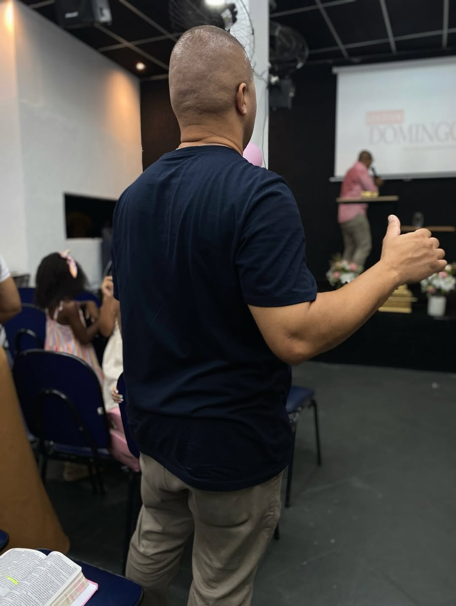
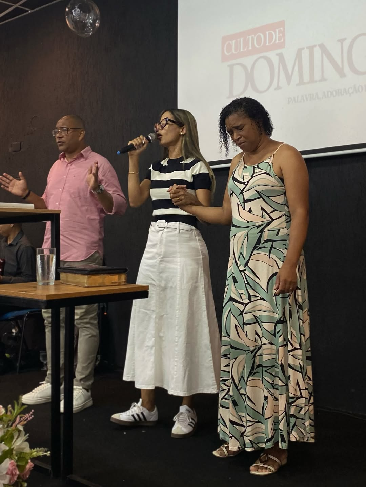

Ênfase em obediência, louvor, milagres e realizadora da marcante Conferência Filhas do Rei.
A ADMAV Praça Seca carrega uma ênfase clara: a adoração atrai milagre e move o coração de Deus.
Quarta Profética, mini vigílias, conferências e cultos de celebração formam uma atmosfera de oração, louvor e cura.
Uma reunião de milagres, adoração intensa e cura divina.
Uma conferência anual icônica que marca tempos novos para as mulheres.
Momentos de quebrantamento espiritual e oração ininterrupta durante a madrugada.


19:30h
Celebração Principal